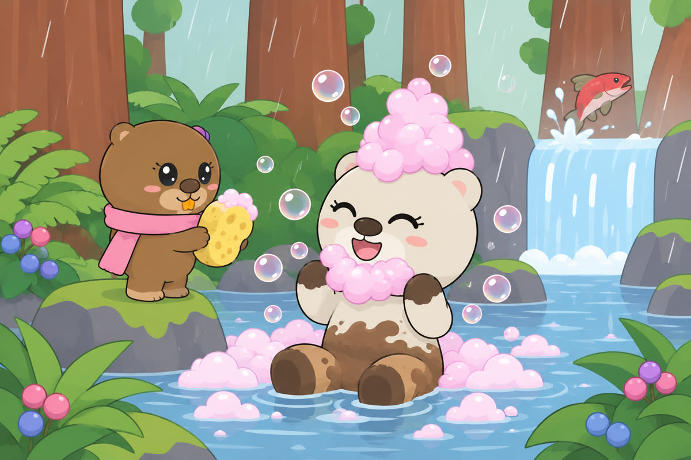

Misty's Bubble Bath (replaces Salmon Leap)
👆 Rub the muddy bear: suds, rain, fluff, then berry colors. Last, her painted paw stamps her team sweater.
- 🧽wash off the mud
- 🌬️fluff and comb
- 🎨berry colors, a crown
She learns: A spirit bear is a black bear with white fur. She uncovers it herself.
Silly: Tap Misty's nose and she sneezes suds over everything.
Why her: It's the barber, with a whole bear. Misty keeps the look, and wears her own paw print on her sweater, for the big game.